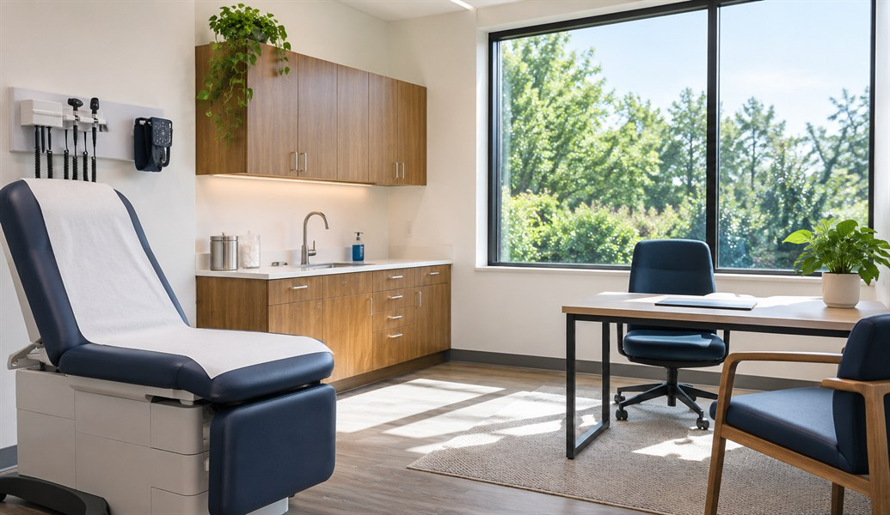

외래 진료
외래 진료 · 진료과별 접수 시간과 외래 진료 절차를 확인하세요.

진료 접수 시간
| 요일 | 접수 시간 |
|---|---|
| 평일 | 오전 8:30–오후 5:00 |
| 토요일 | 오전 8:30–오후 12:00 |
| 점심 시간 | 오후 12:30–오후 1:30 |
진료과별 접수 일정은 해당 의료진의 진료 일정을 확인해 주세요.
외래 진료 절차
- 접수 신청서 작성
대기 중 진료 신청서를 작성해 접수 창구에 제출합니다.
- 환자 확인
등록, 수납, 검사와 진료 창구에서 성명과 생년월일을 확인합니다.
- 진료와 검사
접수한 진료과의 순서를 확인한 뒤 진료 및 필요한 검사를 받습니다.
- 수납
진료와 검사 후 수납 창구에서 비용을 납부합니다.
- 처방과 귀가
처방전과 다음 진료 일정을 확인합니다.
환자 확인은 접수, 수납, 검사와 진료 창구에서 반복해 진행합니다. 접수 시 성명과 생년월일을 확인할 자료를 준비해 주세요.
진료 신청서는 대기 순서에 맞춰 작성하고 접수 창구에 제출합니다. 진료과별 의료진 일정은 외래 예약 전에 확인해 주세요.
외래 서비스
- 진료 절차와 진료과 선택 정보 확인
- 진료 시설 위치 확인
- 진료 방문 차량 무료 주차 확인
- 입원 환자의 병실 위치 확인
- 휠체어 대여
- 신청서 작성 지원
- 불편·불만 사항 상담
방문 전 확인 사항
접수 시간은 환자 수와 진료과 운영 상황에 따라 조정될 수 있으므로 방문 전에 진료 일정을 확인해 주세요. 응급 환자는 외래 접수 시간과 관계없이 응급실에서 진료를 받을 수 있습니다.
처음 방문하는 환자는 건강보험 자격 확인 자료를 준비해 주세요. 의료급여 환자는 진료 의뢰서 등 필요한 자료를 해당 진료과에 확인합니다.
병원에서는 진료실 위치 안내와 상담을 돕는 설명 간호 서비스를 운영합니다. 입원 대기 시간을 줄이고 수술·검사 전 처치를 지원하는 주간 병동도 이용할 수 있습니다.
진료과 선택, 진료 시설 위치, 병실 확인, 휠체어 대여와 신청서 작성 지원은 방문 중 안내 창구에서 요청할 수 있습니다.
이용 시 확인할 사항
접수 시간외래 접수는 진료과 운영 시간과 당일 접수 상황에 따라 조정될 수 있습니다.
초진 환자처음 방문하는 환자는 본인 확인 자료와 보험 자격 정보를 준비합니다.
의료급여의료급여 이용자는 필요한 진료 의뢰서 또는 관련 자료를 접수 전에 확인합니다.
예약 진료예약 시간보다 일찍 도착해 접수와 검사 준비를 마쳐 주세요.
응급 상황응급 환자는 외래 접수 시간과 관계없이 응급실에서 평가합니다.
진료 후검사 예약과 다음 진료 일정은 진료과 안내에 따라 확인합니다.